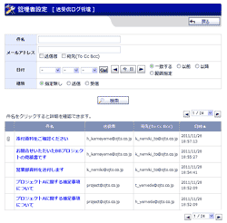

|
メール受信
・
メール検索
メール新規作成 ・ メール詳細 WEBメールの受信画面です。 受信したメールを閲覧することができます。 |
|---|---|
|
管理者設定メニュー
管理者グループに所属するユーザのみ使用可能なメニュー画面です。 |
|
 |
アカウントマネージャー
登録されているアカウントを閲覧することができます。 また、アカウントを検索することもできます。 |
 |
個人設定アカウント新規登録
・
アカウント新規登録確認
管理者設定アカウント新規登録 ・ アカウント新規登録確認 個人設定アカウント編集 ・ アカウント編集確認 管理者設定アカウント編集 ・ アカウント編集確認 アカウントの登録・編集を行います。 個人設定では個人が使用するアカウントを登録することができます。 また、管理者設定では共通で使用するアカウントを登録することができます。 |
 |
自動削除設定
・
自動削除設定確認
全ユーザのWEBメールデータの自動削除設定を行います。 |
|
手動データ削除
・
手動データ削除確認
WEBメールデータの手動削除設定を行います。 |
|
|
予約送信メール管理
・
予約送信メール取消確認
予約送信メールの確認、送信取消を行うことができます。 |
|
|  |
送受信ログ管理
WEBメールの送受信ログを確認することができます。 |
|
統計情報
WEBメールの統計情報を確認することができます。 |
|
 |
個人設定メニュー
WEBメールの個人設定を行うメニュー画面です。 |
|
アカウントの管理
登録されているアカウントを閲覧することができます。 |
|
|
ラベルの管理
管理者設定 ラベルの管理
登録されているラベルをアカウント毎に閲覧することができます。 |
|
 |
ラベル登録
・
ラベル登録確認
管理者設定 ラベル登録 ・ 管理者設定 ラベル登録確認 ラベルの登録を行います。 |
 |
フィルタ設定
管理者設定 フィルタ設定 登録されているフィルタをアカウント毎に閲覧することができます。 |
|
フィルタ登録
・
フィルタ登録確認
管理者設定 フィルタ登録 ・ 管理者設定 フィルタ登録確認 フィルタの登録を行います。 |
|
|
アカウント基本設定
・
アカウント基本設定確認
アカウントの基本設定を行います。 |
|
|
アカウントインポート
・
アカウントインポート確認
アカウントのインポートを行います。 |
|
 |
フィルタ設定
登録されている全てのフィルタを閲覧、編集することができます。 |
|
管理者設定 フィルタ登録
・
管理者設定 フィルタ登録確認
フィルタの登録を行います。 |
|
 |
送受信ログ自動削除設定
・
送受信ログ自動削除設定確認
WEB送受信ログの自動削除設定を行います。 |
|
送受信ログ手動削除
・
送受信ログ手動削除確認
WEB送受信ログの手動削除を行います。 |
|
|
アカウント編集
・
アカウント編集確認
アカウントの編集を行います。 |
|
 |
管理者設定 メールテンプレート管理(共通)
管理者設定 メールテンプレート管理 個人設定 メールテンプレート管理 メールテンプレートの管理を行います。 |
 |
管理者設定 メールテンプレート登録(共通)
・
メールテンプレート登録確認(共通)
管理者設定 メールテンプレート登録 ・ メールテンプレート登録確認 個人設定 メールテンプレート登録 ・ メールテンプレート登録確認 メールテンプレートの登録を行います。 |
 |
管理者設定 送信先リスト管理
管理者設定 送信先リスト登録 ・ 管理者設定 送信先リスト登録確認 管理者設定 送信先リスト編集 ・ 管理者設定 送信先リスト編集確認 送信先リストの管理を行います。 |